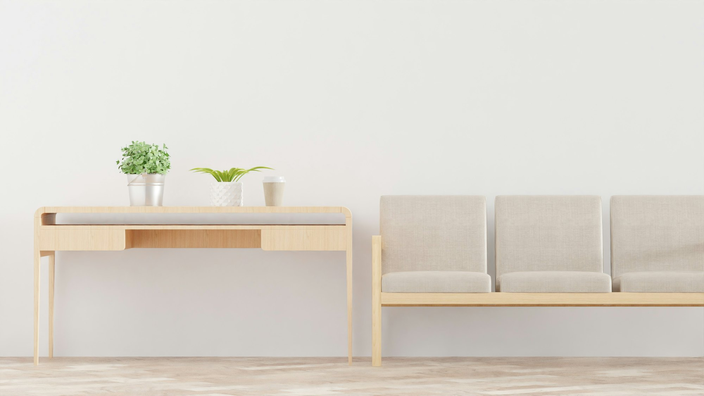
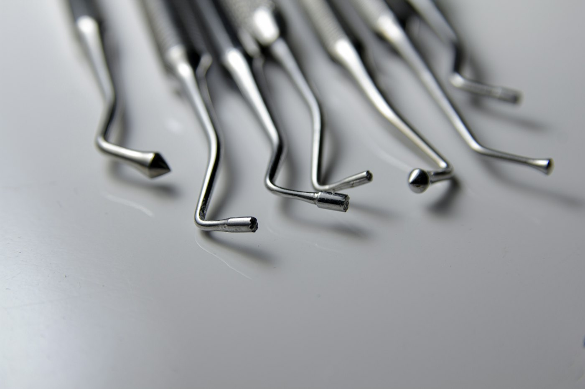
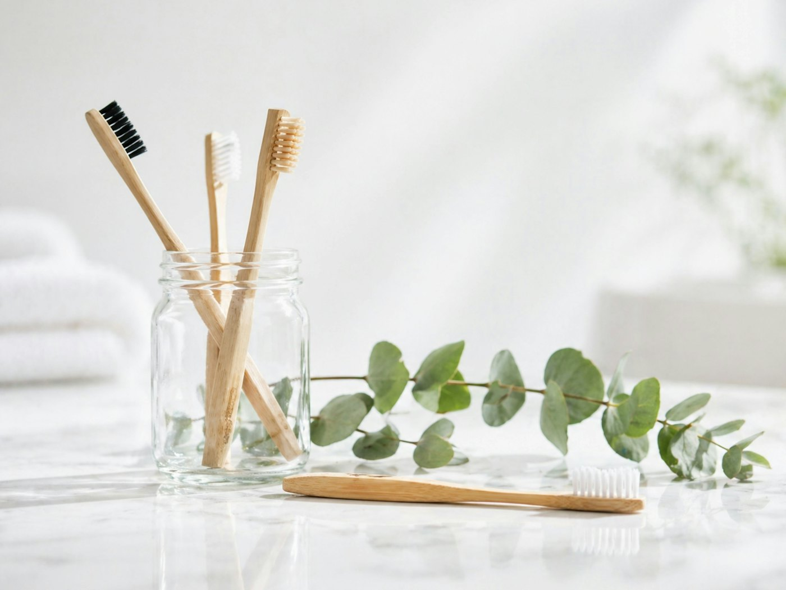
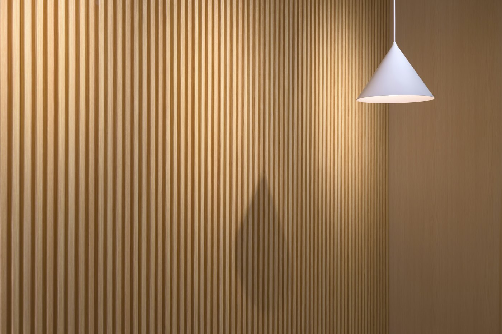
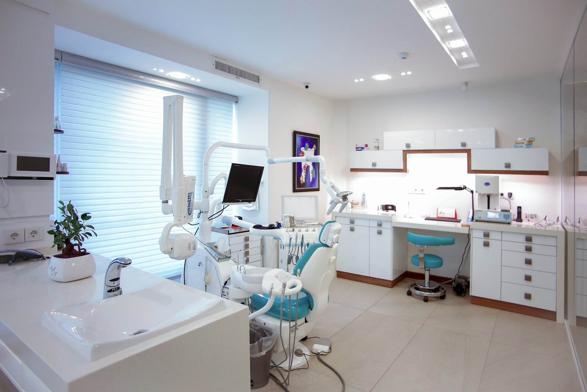
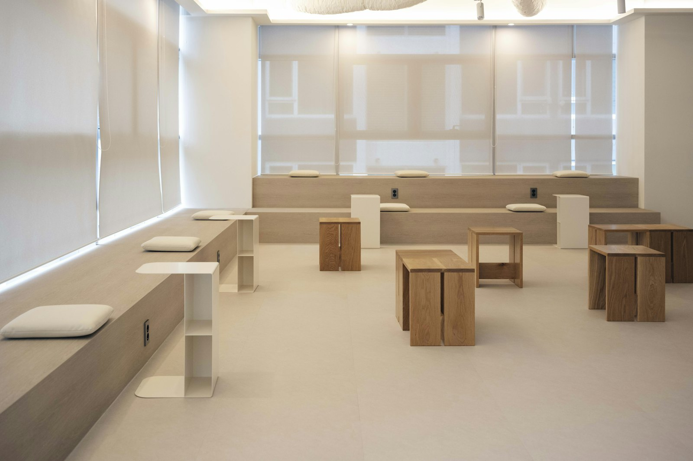

대표
한서윤 대표원장 (가상 인물)
치과보존과 전문의
- 신경 치료 · 보존 치료
- 충치 치료 · 구강검진
로빈테크 디자인 샘플 · 상호와 정보는 가상입니다
수요일은 20:30까지 야간 진료합니다
서울 성동구의 작은 치과입니다. 진료 의자는 모두 개별실에 두었고, 치료 전에 사진을 함께 보며 계획을 설명합니다.

01
진료 전에 구강 사진과 엑스레이를 함께 보며 지금 상태와 치료 방법, 기간과 비용을 먼저 말씀드립니다. 결정은 설명을 들으신 뒤에 하셔도 됩니다.
비급여 진료비 안내치아와 잇몸 상태를 살피고 치석을 정리합니다. 검진 결과는 사진과 함께 설명해 드립니다.
충치의 깊이와 위치를 확인한 뒤 레진, 인레이 같은 치료 방법과 비용을 먼저 안내합니다.
자연 치아를 지킬 수 있는지부터 검토합니다. 치료 횟수와 기간을 미리 알려 드립니다.
잇몸에서 피가 나거나 붓는다면 잇몸 깊이를 측정하고, 상태에 맞춰 단계별로 치료합니다.
치아를 잃은 부위의 뼈와 잇몸을 검사한 뒤 임플란트, 브리지, 틀니 같은 선택지를 나란히 놓고 설명합니다.
아이가 진료실에 익숙해지도록 첫 방문은 검진과 이야기 위주로 진행합니다.



02
‘느루’는 한꺼번에 몰아치지 않고 길게 늘여서 한다는 순우리말입니다. 치료도 그렇게 나누어, 설명하고 확인하며 진행합니다.
03
두 명의 치과의사가 진료합니다. 처음 상담한 의사가 치료가 끝날 때까지 함께합니다.
대표
한서윤 대표원장 (가상 인물)
치과보존과 전문의
진료
이도현 원장 (가상 인물)
통합치의학과 전문의

04
예약하신 분을 먼저 진료합니다. 예약 없이 오셔도 되지만 기다리는 시간이 길어질 수 있어요.
| 월 · 화 · 목 · 금 | 09:30 – 18:30 |
|---|---|
| 수요일 야간 진료 | 09:30 – 20:30 |
| 토요일 | 09:30 – 14:00 점심시간 없이 진료 |
| 점심시간 | 13:00 – 14:00 |
| 휴진 | 일요일 · 공휴일 |
접수는 진료 마감 30분 전까지 받습니다. 휴진일과 임시 휴진은 카카오톡 채널에서 미리 알려 드립니다.

05
서울 성동구 느루길 12, 3층 (가상 주소)